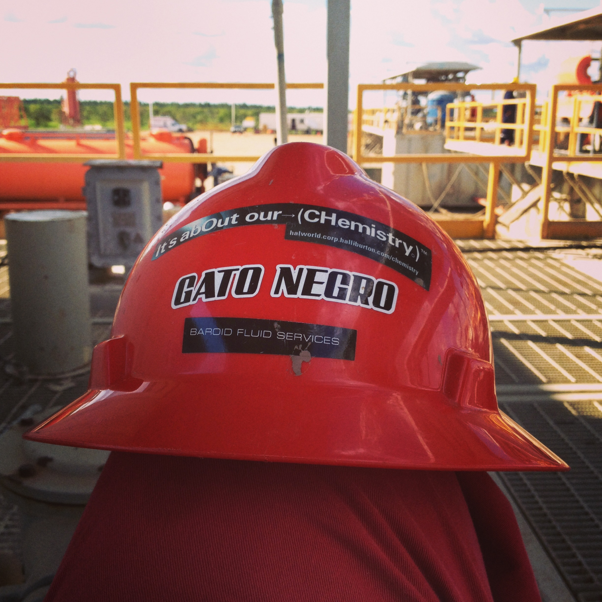
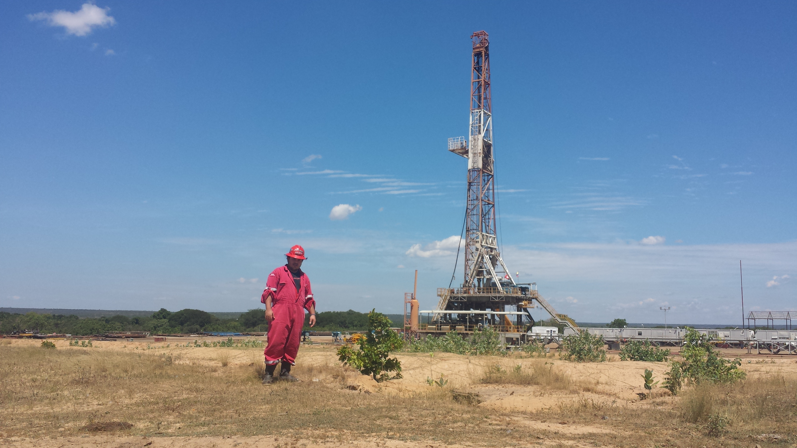

In april 2011 I obtained my BSc in Chemical Engineering in Venezuela. In July of that same year I started working in the Oil & Gas Industry in Venezuela with Halliburton as a Drilling Fluids Engineer, position that I held until June 2019 (here you can see a more detailed description of my time as a Drilling Fluids Engineer).
Ever since my time as a university student, I always been interested in computers and computer programming, during my student years I worked installing operating systems and fixing my fellow students computers.
My first experience in computer programming was when I decided to build a piping system program for my thesis, for this I ended up using Python and wxPython as the GUI framework.
After graduating and finding a job, I put aside learning about computer programming and focused on my new job and personal life.
Working as a Drilling Fluids Engineer I got the opportunity to learn many things about the industry and about myself, travelled all around Venezuela working in many oil fields, and also got the opportunity to travel to the United States for professional training.
While working in the Oil & Gas industry, learning about computer programming and using this knowledge to improve my work was always in the back of my mind, so I decided in 2018 to dedicate part of my free time reading and learning about software development.
I started reading a lot about what programming language to learn and what path to take, my main interest is creating apps for desktop and maybe mobile operating systems. Even though there's plenty of options on what technology to use, I decided to start learning about Web Development (JavaScript, HTML and CSS), I feel that with technologies like Electron and React Native, I could learn Web Development and create apps that can be use on the web and also on desktop and mobile.
Now I dedicate my time trying to learn something new about programming everyday, while working on a couple of personal projects.